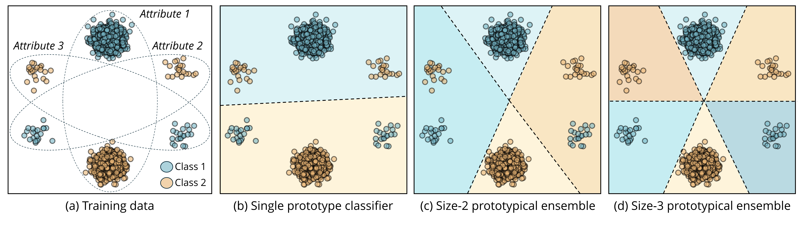

Diversified Prototypical Ensembles (DPE)
Minh Nguyen Nhat To, Paul F R Wilson, Viet Nguyen, Mohamed Harmanani, Michael Cooper
Fahimeh Fooladgar, Purang Abolmaesumi, Parvin Mousavi, Rahul Krishnan

Abstract
Subpopulation shifts, characterized by disparities in subpopulation distributions between training and target datasets, can significantly degrade model performance. We propose DPE, a method that augments a frozen feature extractor with a set of prototype classifiers trained to diversify across latent subpopulations. Our approach outperforms prior methods in worst-group accuracy across nine real-world benchmarks without using subgroup labels.
Visual Overview


Benchmark Results
📊 Worst-Group Accuracy — No Subgroup Labels
| Dataset | ERM | DFR | RWY | DPE |
|---|
| Waterbirds | 57.6 | 70.2 | 71.8 | 91.0 |
| CelebA | 60.4 | 78.3 | 81.7 | 84.6 |
| CheXpert | 65.0 | 73.2 | 75.1 | 76.8 |
| MetaShift | 83.3 | 90.1 | 90.6 | 91.7 |
| ImageNet-BG | 72.1 | 80.3 | 82.6 | 88.1 |
| CivilComments | 58.2 | 65.8 | 67.5 | 70.8 |
| MultiNLI | 71.0 | 73.7 | 75.2 | 76.5 |
| Living17 | 46.3 | 53.9 | 55.6 | 58.1 |
| NICO++ | 54.1 | 65.3 | 68.0 | 69.9 |
| Average | 57.7 | 65.2 | 67.5 | 73.9 |
|---|
📊 Worst-Group Accuracy — With Subgroup Labels
| Dataset | CRT | DFR* | GAP | DPE |
|---|
| Waterbirds | 77.9 | 88.4 | 90.7 | 94.1 |
| CelebA | 79.2 | 82.6 | 85.3 | 87.0 |
| CheXpert | 71.8 | 75.3 | 78.6 | 80.2 |
| MetaShift | 88.1 | 90.3 | 92.4 | 93.5 |
| ImageNet-BG | 80.1 | 85.7 | 89.3 | 90.4 |
| CivilComments | 63.5 | 68.3 | 69.7 | 70.8 |
| MultiNLI | 74.6 | 76.2 | 77.8 | 78.4 |
| Living17 | 49.3 | 54.7 | 56.1 | 59.2 |
| NICO++ | 59.3 | 62.4 | 64.7 | 66.3 |
| Average | 73.0 | 77.1 | 83.9 | 83.0 |
|---|
BibTeX
@inproceedings{to2025dpe,
title={Diverse Prototypical Ensembles Improve Robustness to Subpopulation Shift},
author={To, Minh Nguyen Nhat and Wilson, Paul F R and Nguyen, Viet and Harmanani, Mohamed and Cooper, Michael and
Fooladgar, Fahimeh and Abolmaesumi, Purang and Mousavi, Parvin and Krishnan, Rahul},
booktitle={International Conference on Machine Learning (ICML)},
year={2025}
}